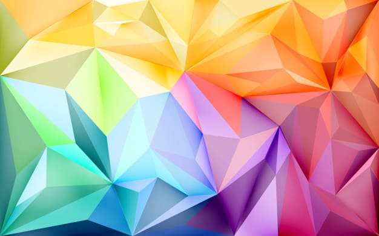

This is example for Blur
This is example for Brightness
This is example for Contrast
This is example for Drop-shadow
This is example for Grayscale
This is example for Hue-rotate
This is example for Invert
This is example for Opacity
This is example for Saturate
This is example for Sepia